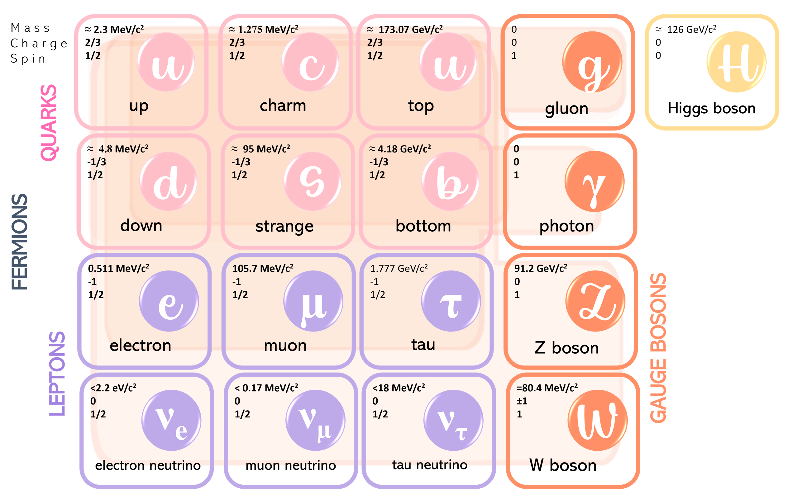

¿Qué son las partículas fundamentales?
Un viaje al corazón de la materia para desvelar los secretos del cosmos.
Imagina esto: Tomas un puñado de arena y lo partes a la mitad. Y luego otra vez. Y otra. ¿Hasta dónde podrías llegar? ¿Qué tan pequeñas pueden ser las piezas que forman todo lo que vemos?
La física de partículas responde a esta pregunta, y su respuesta ha transformado nuestra comprensión del universo.
¿Qué son las partículas fundamentales?
Las partículas fundamentales son los ladrillos más básicos de la realidad. No están hechas de nada más pequeño —al menos hasta donde sabemos—. Son los ingredientes con los que está construida toda la materia, la luz e incluso las fuerzas de la naturaleza.
El modelo que las organiza se llama Modelo Estándar de la física de partículas. Es como la tabla periódica del universo subatómico, y en él encontramos dos grandes familias de partículas:
- Fermiones, que constituyen la materia.
- Bosones, que median las interacciones fundamentales.
El Modelo Estándar describe 12 fermiones fundamentales (6 quarks y 6 leptones) y 5 bosones fundamentales. Esto suma 17 "tipos" de partículas.
Los fermiones se dividen a su vez en 6 quarks: up ($u$), down ($d$), charm ($c$), strange ($s$), top ($t$) y bottom ($b$); y los 6 leptones: electrón ($e$), muón ($\mu$), tau ($\tau$) y sus neutrinos asociados: neutrino electrónico ($\nu_e$), neutrino muónico ($\nu_\mu$) y neutrino tau ($\nu_\tau$).
Estas partículas se organizan en tres generaciones. La primera generación (quarks up y down, electrón y neutrino electrónico) forma la materia estable que nos rodea. Las generaciones superiores (quarks charm, strange, top, bottom, y leptones muón y tau con sus neutrinos) son más masivas e inestables, y se desintegran rápidamente en partículas de la primera generación.
Los bosones se dividen en los bosones de gauge; fotón ($\gamma$), gluón ($g$), bosones $W^\pm$ y $Z^0$, y el bosón escalar de Higgs ($H$). Ahora te mostraré la famosa imagen del Modelo Estándar.

Para tener una imagen completa, debemos considerar las antipartícula de cada fermión (duplicando su número a 24). Algunos bosones, como el fotón, el gluón, el Z y el Higgs, son sus propias antipartículas (el gluón tiene 8 variedades debido a sus cargas de color). Los bosones $W^+$ y $W^-$ son antipartículas entre sí. Con todo esto, el número total de partículas distintivas que describe el Modelo Estándar asciende a 37.
¿Qué hace cada partícula?
Los bosones son los “mensajeros” de las fuerzas fundamentales de la naturaleza: la fuerza electromagnética, la fuerza nuclear fuerte y la fuerza nuclear débil. Cada uno tiene una función única, y aunque no los veamos, su existencia explica por qué hay materia, movimiento, luz, reacciones nucleares… y masa.
| Bosón | Fuerza / Rol | ¿Qué hace? | ¿Por qué importa? |
|---|---|---|---|
| Fotón (γ) | Electromagnética | Transmite la luz y la electricidad | Sin fotones, no habría luz, ni química, ni comunicación |
| Gluones (g) | Fuerte (QCD) | Pegan los quarks dentro de protones y neutrones | Son responsables de que exista el núcleo atómico |
| Bosón W⁺/W⁻ | Débil (interacción cargada) | Provocan ciertos tipos de desintegración radiactiva | Permiten reacciones nucleares como las del Sol |
| Bosón Z⁰ | Débil (interacción neutra) | Media interacciones débiles sin cambio de carga | Ayuda a explicar desintegraciones sin emisión de carga |
| Bosón de Higgs (H) | Mecanismo de Higgs | Da masa a las partículas al interactuar con ellas | ¡Sin él, todo sería luz sin materia con masa! |
Cada partícula cumple una función específica. Y entenderlas nos permite comprender por qué los átomos se forman, cómo brillan las estrellas, y hasta cómo nació el universo.
Los fermiones por otro lado, constituyen la materia y se agrupan en dos familias: los leptones (como el electrón) que son fundamentales y no interactúan fuertemente, y los hadrones (como protones y neutrones) que están compuestos por quarks. Los protones, por ejemplo, están compuestos principalmente de dos quarks up y un quark down. Pero la realidad de los protones no es esa. Claro, principalmente están estos tres quarks y los gluones que los unen, pero al mismo tiempo contienen un mar de quarks y antiquarks virtuales y gluones que se intercambian constantemente. Estas partículas "virtuales" aparecen y desaparecen rápidamente, mediando las interacciones.| Fermión | Carga Eléctrica | ¿Forma parte de la materia estable? | ¿Por qué importa? |
|---|---|---|---|
| Quark up, down | +2/3, -1/3 | Sí | Forman protones y neutrones, los bloques de construcción de los núcleos atómicos. |
| Quarks strange, charm, top y bottom | -1/3, +2/3, +2/3, -1/3 | No | Aparecen en partículas inestables y son cruciales para entender decaimientos radioactivos y procesos de alta energía. |
| Electrón⁻ | -1 | Sí | Orbita el núcleo para formar átomos y es fundamental para la química y la electricidad. |
| Muón y tau | -1, -1 | No | Son versiones más pesadas del electrón que se desintegran en partículas más ligeras, revelando pistas sobre las jerarquías de masa en el universo. |
| Neutrinos | 0 | No directamente | Son muy livianos y neutros, no forman estructuras, pero son clave en las reacciones nucleares del Sol y su estudio reveló que poseen una pequeña masa, extendiendo el Modelo Estándar. |
Entonces ¿Para qué sirven estas otras partículas elementales?
Aunque los quarks strange, charm, top y bottom, así como los muones y taus, no forman parte de la materia estable que nos rodea, son esenciales para entender procesos fundamentales del universo. Los quarks extraños ($s$) aparecen, por ejemplo, en partículas inestables llamadas kaones, que son producidas en colisiones de alta energía. Los quarks charm ($c$), bottom ($b$) y top ($t$) son aún más masivos y efímeros, pero su existencia y sus interacciones nos permiten estudiar fenómenos como las desintegraciones de partículas o las condiciones del universo primitivo. De manera similar, los muones ($\mu$) y taus ($\tau$) son versiones más pesadas del electrón, que se desintegran rápidamente en partículas más ligeras, pero su estudio nos da pistas sobre las simetrías y jerarquías de la masa en el universo.
A primera vista, parece ciencia lejana. Pero estudiar estas partículas ha cambiado nuestra vida:
- El internet nació como una forma de compartir datos entre físicos de partículas en CERN.
- Las resonancias magnéticas (MRI) usan principios de física cuántica.
- La física de partículas ha llevado al desarrollo de tecnologías en computación, materiales, seguridad e incluso agricultura.
Además, hay algo más profundo: nos ayuda a responder quiénes somos y de dónde venimos.
5 datos curiosos de las partículas
- Neutrinos: miles de millones cruzan tu cuerpo cada segundo, ¡y ni los notas!
- Antimateria: cada partícula tiene una “gemela opuesta”. Si se encuentran… ¡boom!
- Gluones: son como “pegamento” que mantiene a los quarks juntos dentro del protón.
- Campo de Higgs: está en todo el universo, como un campo invisible que da masa.
- Colisiones en el LHC: recrean condiciones del Big Bang a 27 km bajo tierra.
Una aventura que apenas comienza
Estudiar partículas no es solo buscar lo más pequeño, sino descubrir lo más profundo.
Cabe mencionar que el Modelo Estándar describe tres de las cuatro fuerzas fundamentales. La gravedad es la gran ausente, y los físicos aún buscan una partícula que la medie, el hipotético gravitón para unificar todas las fuerzas del universo.
En el próximo blog hablaremos sobre cómo los científicos detectan estas partículas invisibles. ¿Cómo ver lo que no se puede ver? ¡Te sorprenderás con la respuesta!
¿Qué te ha sorprendido más de los componentes fundamentales del universo? ¡Déjame tus comentarios!